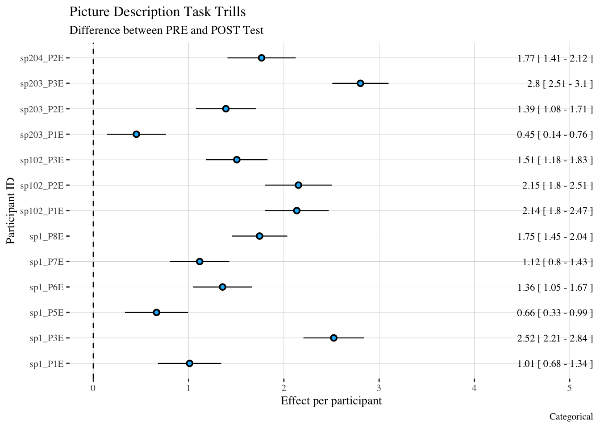

| level | PRE | POST |
|---|---|---|
| sp1 | 1.04 (0.9) | 2.05 (0.87) |
| sp102 | 0.86 (1.05) | 2.18 (0.92) |
| sp203/204 | 0.64 (0.82) | 2.23 (1.24) |
report trills occlusions
Sentence Reading Task
Table 1
Figure 1 shows the number of occurrences of each number of trills in each group at pre and post test.
Figure 1
Figure 2
Table 2
| Number of Occlusions | |||
|---|---|---|---|
| Predictors | Estimates | CI | p |
| (Intercept) | 1.01 | 0.52 – 1.50 | <0.001 |
| time [POST] | 1.04 | 0.49 – 1.59 | <0.001 |
| level [sp102] | -0.17 | -1.02 – 0.69 | 0.703 |
| level [sp203/204] | -0.37 | -1.15 – 0.41 | 0.355 |
| time [POST] * level [sp102] |
0.29 | -0.66 – 1.25 | 0.546 |
| time [POST] * level [sp203/204] |
0.55 | -0.32 – 1.42 | 0.217 |
| Random Effects | |||
| σ2 | 0.60 | ||
| τ00 participant | 0.37 | ||
| τ11 participant.timePOST | 0.45 | ||
| ρ01 participant | -0.40 | ||
| ICC | 0.42 | ||
| N participant | 13 | ||
| Observations | 1259 | ||
| Marginal R2 / Conditional R2 | 0.293 / 0.587 | ||
Table 3
| Model | Chisq | Df | P-value |
|---|---|---|---|
| Time | 20.66 | 1 | < .05 |
| Group | 0.24 | 2 | 0.89 |
| Time:Group Interaction | 1.88 | 2 | 0.39 |
Table 4
| level | participant | PRE | POST |
|---|---|---|---|
| sp1 | sp1_P1E | 1.04 (0.41) | 1.96 (0.58) |
| sp1 | sp1_P3E | 0.5 (0.55) | 2.68 (0.86) |
| sp1 | sp1_P5E | 1.04 (0.62) | 1.69 (0.59) |
| sp1 | sp1_P6E | 1.75 (0.93) | 2.04 (0.6) |
| sp1 | sp1_P7E | 0 (0) | 1.17 (0.84) |
| sp1 | sp1_P8E | 1.72 (0.95) | 2.78 (0.55) |
| sp102 | sp102_P1E | 0.21 (0.46) | 2.44 (1.13) |
| sp102 | sp102_P2E | 0.92 (1.26) | 2.02 (0.83) |
| sp102 | sp102_P3E | 1.4 (0.9) | 2.08 (0.72) |
| sp203/204 | sp203_P1E | 0.04 (0.2) | 0.71 (0.58) |
| sp203/204 | sp203_P2E | 1.16 (1.02) | 2.67 (0.97) |
| sp203/204 | sp203_P3E | 0.45 (0.54) | 2.7 (1.12) |
| sp203/204 | sp204_P2E | 0.92 (0.75) | 2.84 (0.77) |
Figure 3
Lectura
Table 5
| level | PRE | POST |
|---|---|---|
| sp1 | 0.8 (0.94) | 2.14 (1.16) |
| sp102 | 0.72 (0.9) | 2.19 (0.9) |
| sp203/204 | 0.38 (0.72) | 2.18 (1.43) |
Figure 4
Figure 5
Table 6
| Number of Occlusions | |||
|---|---|---|---|
| Predictors | Estimates | CI | p |
| (Intercept) | 0.80 | 0.37 – 1.23 | <0.001 |
| time [POST] | 1.33 | 0.67 – 1.99 | <0.001 |
| level [sp102] | -0.08 | -0.83 – 0.66 | 0.826 |
| level [sp203/204] | -0.42 | -1.10 – 0.25 | 0.219 |
| time [POST] * level [sp102] |
0.14 | -1.00 – 1.28 | 0.811 |
| time [POST] * level [sp203/204] |
0.48 | -0.56 – 1.51 | 0.368 |
| Random Effects | |||
| σ2 | 0.70 | ||
| τ00 participant | 0.24 | ||
| τ11 participant.timePOST | 0.58 | ||
| ρ01 participant | -0.05 | ||
| ICC | 0.42 | ||
| N participant | 13 | ||
| Observations | 400 | ||
| Marginal R2 / Conditional R2 | 0.330 / 0.613 | ||
Table 7
| Model | Chisq | Df | P-value |
|---|---|---|---|
| Time | 21.19 | 1 | < .05 |
| Group | 1.47 | 2 | 0.48 |
| Time:Group Interaction | 1.03 | 2 | 0.6 |
Table 8
| level | participant | PRE | POST |
|---|---|---|---|
| sp1 | sp1_P1E | 0.33 (0.72) | 1.62 (0.81) |
| sp1 | sp1_P3E | 0.56 (0.63) | 3.5 (0.82) |
| sp1 | sp1_P5E | 0.92 (0.67) | 1.6 (0.51) |
| sp1 | sp1_P6E | 1.6 (1.24) | 2.44 (0.89) |
| sp1 | sp1_P7E | 0 (0) | 0.88 (0.96) |
| sp1 | sp1_P8E | 1.4 (0.74) | 2.75 (0.68) |
| sp102 | sp102_P1E | 0.33 (0.49) | 2 (0.97) |
| sp102 | sp102_P2E | 0.5 (0.89) | 2.62 (0.96) |
| sp102 | sp102_P3E | 1.31 (0.95) | 1.93 (0.59) |
| sp203/204 | sp203_P1E | 0 (0) | 0.6 (0.51) |
| sp203/204 | sp203_P2E | 0.5 (0.82) | 2.53 (0.99) |
| sp203/204 | sp203_P3E | 0.19 (0.4) | 2.6 (1.55) |
| sp203/204 | sp204_P2E | 0.81 (0.98) | 3 (1.13) |
Figure 6
Picture Naming Task
Table 9
| level | PRE | POST |
|---|---|---|
| sp1 | 0.7 (0.73) | 2.09 (1) |
| sp102 | 0.64 (0.7) | 2.55 (0.91) |
| sp203/204 | 0.79 (1.1) | 2.33 (1.49) |
Figure 7
Figure 8
Table 10
| Number of Occlusions | |||
|---|---|---|---|
| Predictors | Estimates | CI | p |
| (Intercept) | 0.70 | 0.26 – 1.13 | 0.002 |
| time [POST] | 1.40 | 0.70 – 2.10 | <0.001 |
| level [sp102] | -0.07 | -0.84 – 0.70 | 0.860 |
| level [sp203/204] | 0.09 | -0.60 – 0.78 | 0.791 |
| time [POST] * level [sp102] |
0.53 | -0.70 – 1.75 | 0.396 |
| time [POST] * level [sp203/204] |
0.20 | -0.91 – 1.31 | 0.722 |
| Random Effects | |||
| σ2 | 0.67 | ||
| τ00 participant | 0.23 | ||
| τ11 participant.timePOST | 0.63 | ||
| ρ01 participant | -0.25 | ||
| ICC | 0.41 | ||
| N participant | 13 | ||
| Observations | 268 | ||
| Marginal R2 / Conditional R2 | 0.363 / 0.622 | ||
Table 11
| Model | Chisq | Df | P-value |
|---|---|---|---|
| Time | 20.89 | 1 | < .05 |
| Group | 0.21 | 2 | 0.9 |
| Time:Group Interaction | 0.89 | 2 | 0.64 |
Table 12
| level | participant | PRE | POST |
|---|---|---|---|
| sp1 | sp1_P1E | 1 (0.82) | 1.89 (0.6) |
| sp1 | sp1_P3E | 0.45 (0.52) | 3.2 (0.92) |
| sp1 | sp1_P5E | 0.71 (0.76) | 1.25 (0.45) |
| sp1 | sp1_P6E | 1.18 (0.75) | 2.45 (0.69) |
| sp1 | sp1_P7E | 0 (0) | 1.18 (0.87) |
| sp1 | sp1_P8E | 0.85 (0.69) | 2.62 (0.65) |
| sp102 | sp102_P1E | 0.38 (0.52) | 2.6 (1.43) |
| sp102 | sp102_P2E | 0.38 (0.52) | 2.62 (0.52) |
| sp102 | sp102_P3E | 1.11 (0.78) | 2.45 (0.52) |
| sp203/204 | sp203_P1E | 0.3 (0.48) | 0.67 (0.49) |
| sp203/204 | sp203_P2E | 1.67 (1.5) | 2.9 (0.74) |
| sp203/204 | sp203_P3E | 0.08 (0.29) | 3.15 (1.63) |
| sp203/204 | sp204_P2E | 1.11 (0.78) | 2.86 (0.9) |
Figure 9
